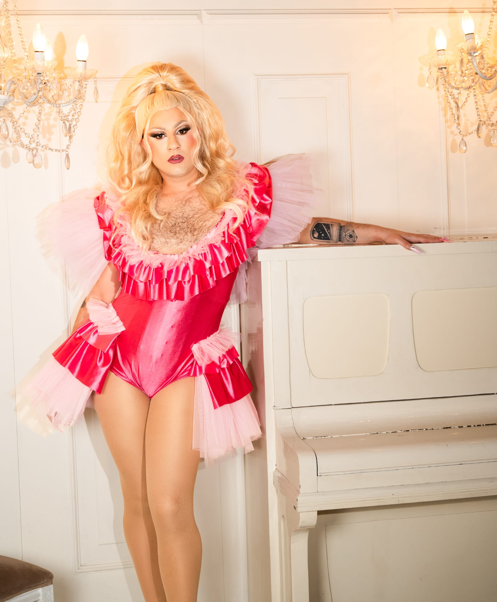

GET TO KNOW ME
HELLO, I'M
MEGAN.
Megan Gag ist eine Drag Queen, Performerin und Moderatorin, die in Zürich und am Bodensee zu Hause ist. Mit einer Mischung aus Glamour, Humor und einer guten Portion Selbstironie sorgt sie auf und neben der Bühne für Unterhaltung.
Seit 2023 steht Megan auf der Bühne und ist mittlerweile an den unterschiedlichsten Veranstaltungen in der Schweiz anzutreffen. Ob bei Drag Shows, Drag Brunches, Pride Partys oder als Host und Moderatorin, Megan liebt es, Menschen zu unterhalten und mit dem Publikum zu interagieren. 2024 gewann sie den Drag Wettbewerb Drag Roy LÄLLE Ty in Basel.
Auftritte führten sie unter anderem nach Zürich, St. Gallen, Basel und Luzern sowie an verschiedene Veranstaltungen rund um den Bodensee.
Neben der Bühne schlägt Megans Herz besonders für Make-up, Beauty und Content Creation. Sie liebt es, mit Make-up zu experimentieren und sich immer wieder neu zu verwandeln. Diese Leidenschaft teilt sie auch mit anderen und schminkt Menschen für ihren eigenen Drag Look. Auch vor der Kamera lebt sie ihre Kreativität gerne aus.
Megan kann für Drag Shows, Drag Brunches, Moderationen, Walking Acts, Drag Make-up und Kooperationen mit Marken gebucht werden.
WORK WITH ME ↗